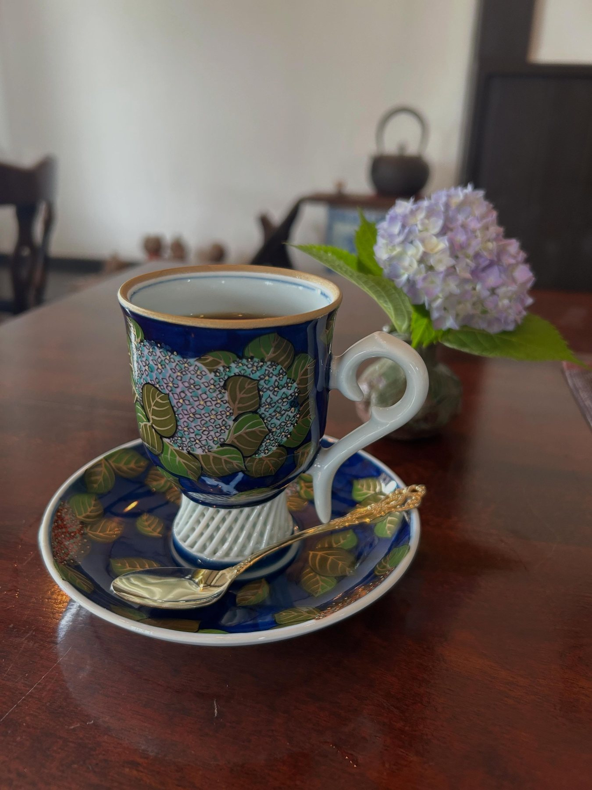
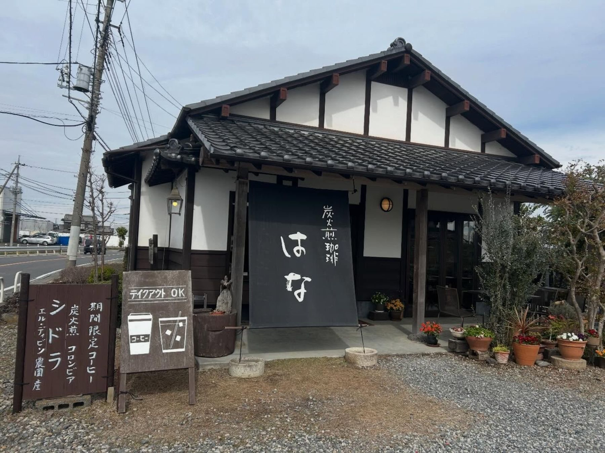
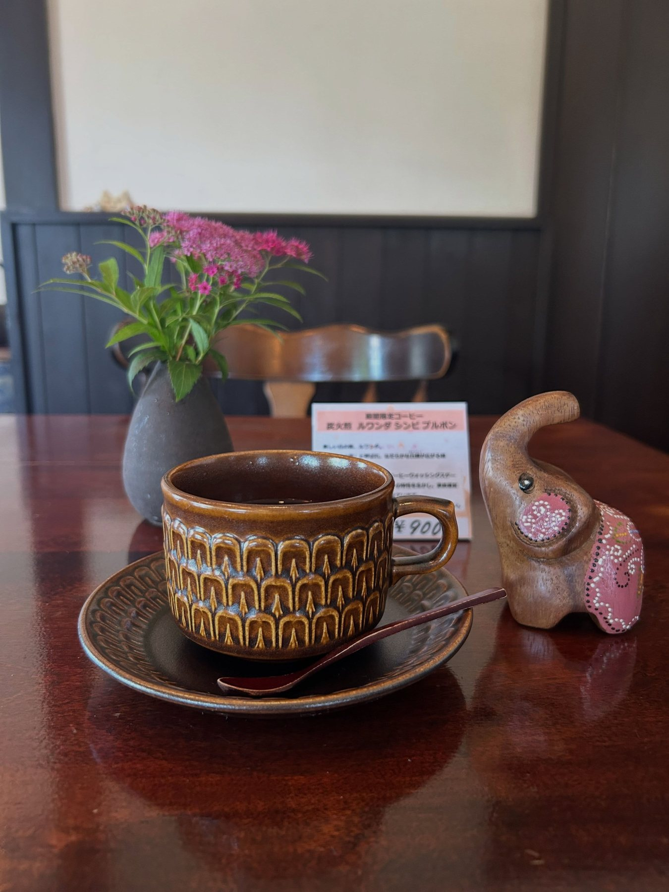
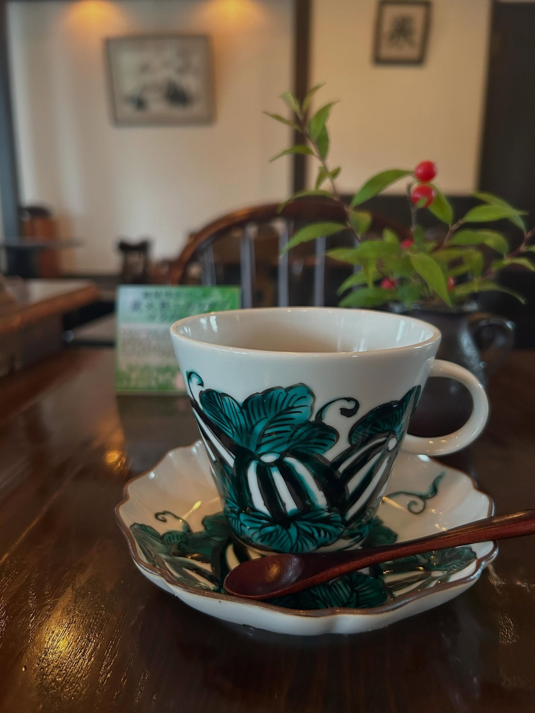
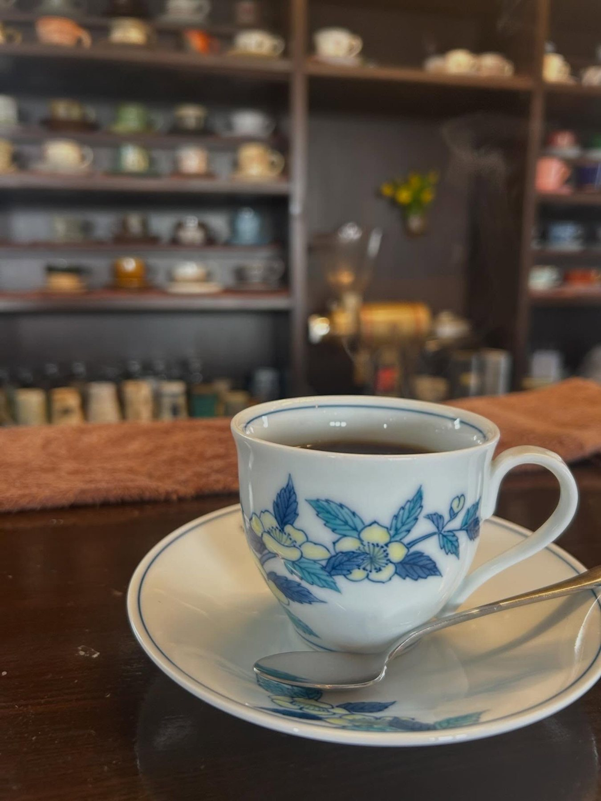
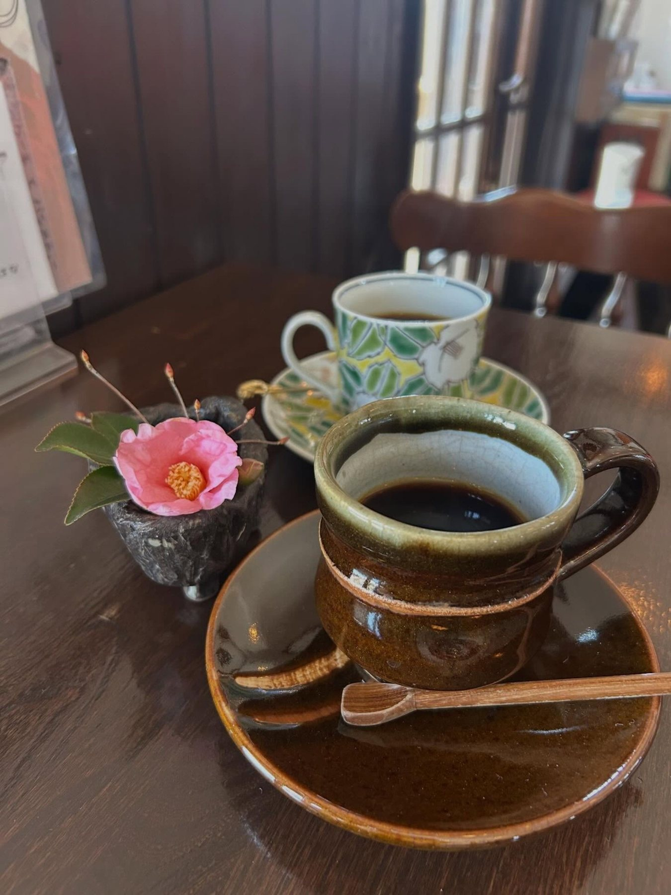
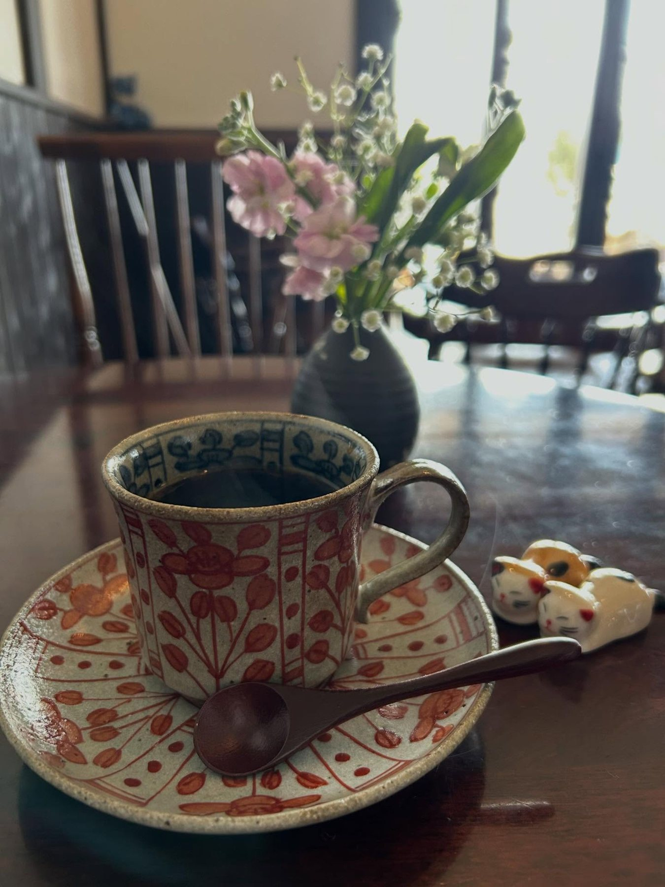
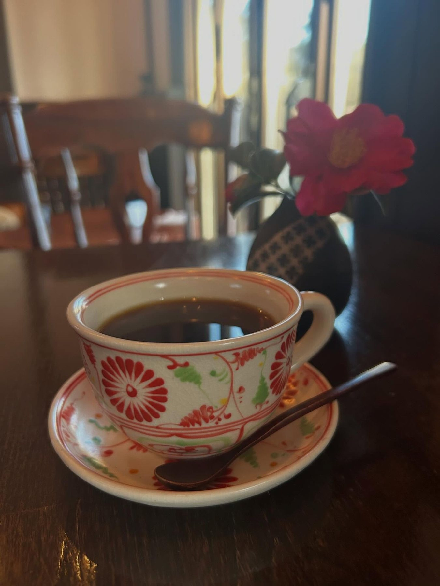
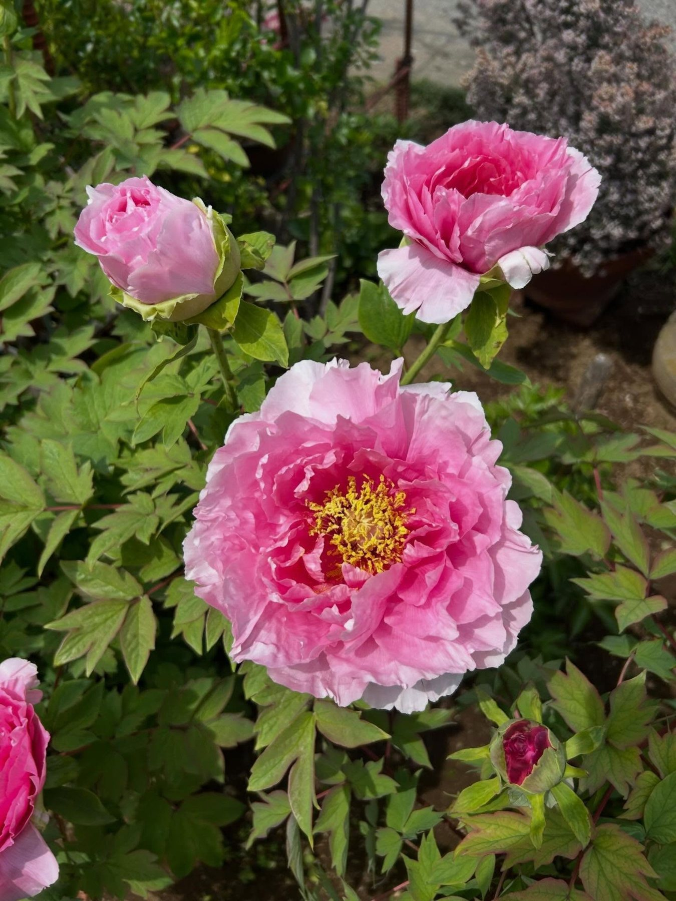
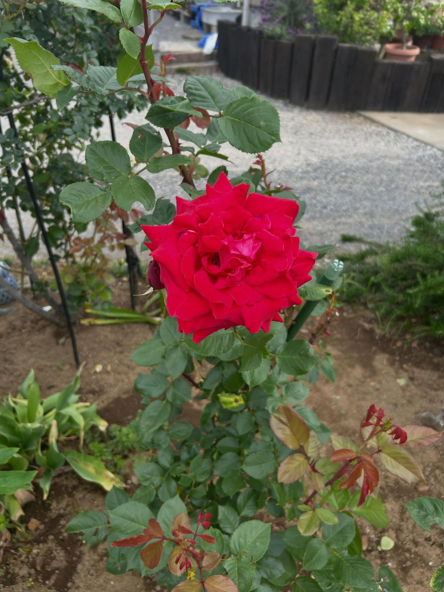

炭火煎ストレートコーヒー
炭火でていねいに焙煎した一杯。期間限定のシングルオリジンも季節ごとに登場します。
SUMIBISEN COFFEE — FUJIMI, SAITAMA
南畑の古民家で、二十年。
炭火で煎ったコーヒーを、お好みのうつわで。
木〜日 11:00–18:00（L.O.17:30）
月・火・水 定休
ABOUT
瓦屋根の日本家屋を店に、富士見市の南畑で二十年目を迎えました。庭には四季の花が咲き、店内にはジャズが流れます。田舎の景色を眺めながら、ゆっくりと過ごしていただける喫茶店です。
炭火で煎ったストレートコーヒーは、数十客のうつわの中から、お好きなカップを選んでお出しします。ご夫婦で営む、あたたかいおもてなしのお店です。

GALLERY








photos from @coffee__hana
季節の花と、田舎の景色とともに。
SHOP INFO
| 店名 | 炭火煎珈琲 はな（すみびせん こーひー はな） |
|---|---|
| 住所 | 〒354-0002 埼玉県富士見市上南畑547 |
| アクセス | びん沼川の近く・南畑地区（駐車場あり） |
| 営業時間 | 木〜日 11:00–18:00（L.O.17:30） |
| 定休日 | 月・火・水 |
| ランチ | 平日のみ・日替わり |
| 電話 | 049-251-3123 |
CONTACT
最新のお知らせや期間限定コーヒーの情報は、Instagramで発信しています。お問い合わせもお気軽にどうぞ。